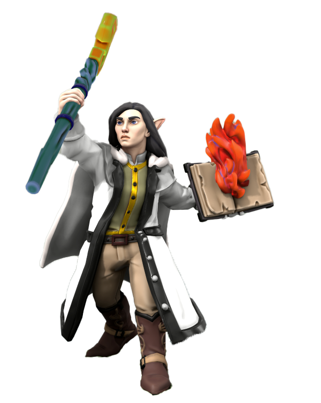
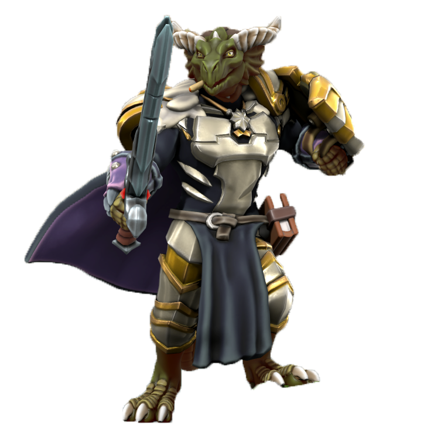
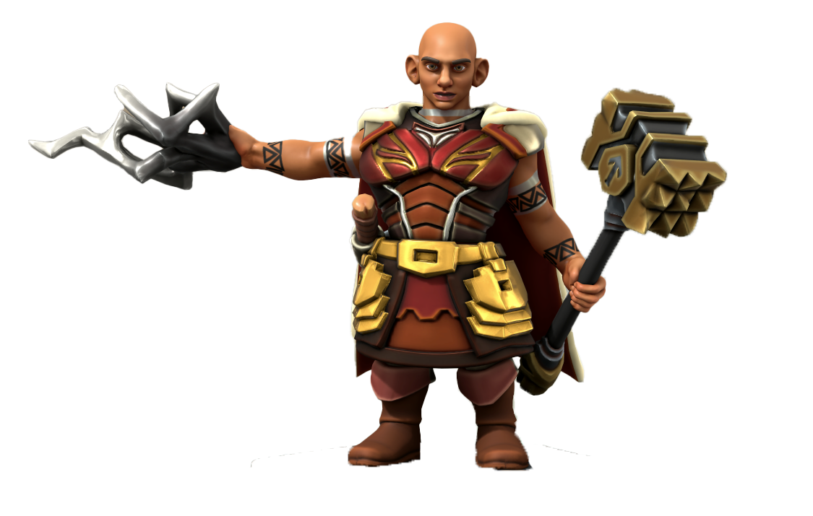
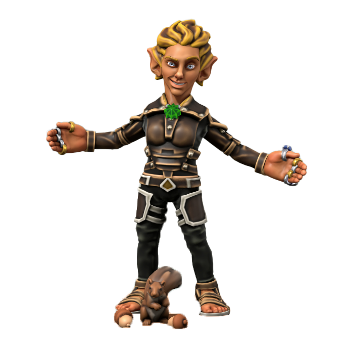
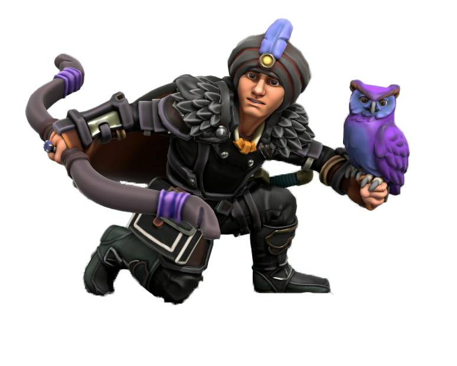

Crofoot the Clear-Sighted is an elven wizard from Blythe. Crofoot pursues knowledge of the Universe so that he can bring peace to the realms. Learning from his past mistakes, he fights to stand up for the people and do what's right.

Iroh Yarjiret the Chaotic Sentinel is a dragonborn fighter from the West. Next in line to be the king of his clan, Iroh fights to prove his worthiness to his father that he is ready to be a leader. He acts as a double agent by worshipping the gods Bahumut and Tiamat, who are both siblings and sworn enemies. While he struggles with internal battle between good and evil, his own moral code always wins out in the end.

Kathra Silverhorn the Faenor is a dwarven cleric from Mintarn. Initially bonded to a chaotic evil goddess, Kathra fights to find her own moral code amongst the gods interfering with mortal affairs. She cares for those that need help, but beware getting on her bad side.

Lil Wyvern the Magnificent is a gnomish rapping bard from the Everland area. Born into the successful Gucci family, he travels the realms to spread his rhymes and good feelings, especially necessary during these trying times. With his charm and warm heart, he connects the realms with friendship and defends what is good. His best friend Fyfe (a squirrel) is the inspiration for the name Fyfe's Five.

Silas Ravencape the Knight of Shadows is a quarterling rogue from Waterdeep. Struck with fate and his father's legacy, Silas fights to find his own path in the realms.
